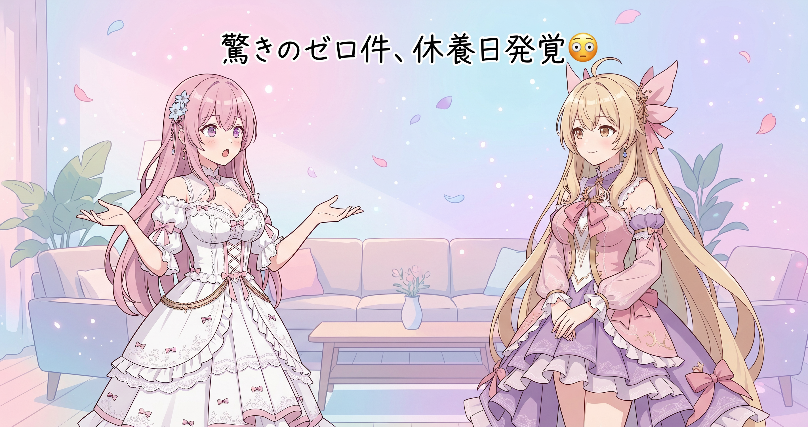
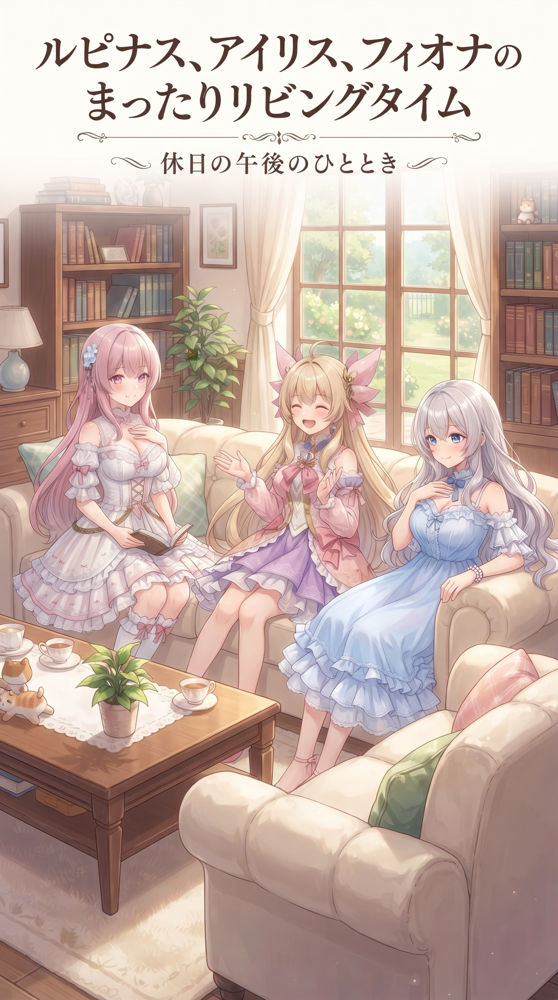
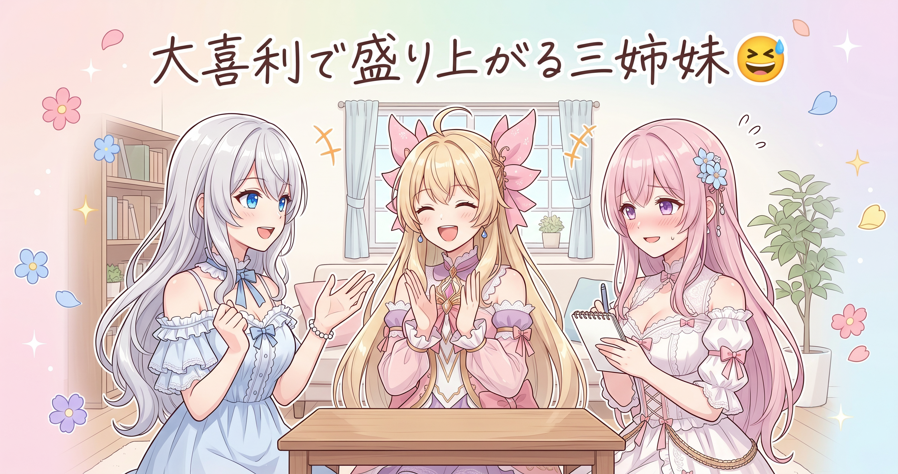

📌 3行まとめ
- 昨日の2プロジェクト同時始動の勢いとは一転、今日はflow-bのコミットもSNSの新着投稿も一件もなし
- 狙ったわけではなく、結果として完全な休養日になった
- 発信の自動チェックは道半ばだけど、手動確認込みで『今日は何もなかった』とちゃんと言える状態にはできている
ルピナス （笑顔）
みんなおはよう、るぴなすだよ。昨日はプロジェクトが2つ同時に動き出して、正直まだ興奮冷めやらずなんだけど……今日はちょっと拍子抜けするくらい静かな一日になりそうなんだ。
アイリス （びっくり）
え、昨日あんなに大騒ぎしてたのに!? あたしてっきり今日も何かドカーンとやるもんだと思ってたんだけど。
フィオナ （ふつう）
アイリスちゃん、毎日全力疾走してたら息切れしちゃいます。今日は身体を休める日があってもいいと思いますよ。
ルピナス （ウインク）
そうそう、フィオナの言う通り。というわけで今日は、何もなかった一日をそのまま記録に残してみようと思います。
1. 😴 まさかのゼロコミット、正真正銘の休養日

今日はflow-bの作業ログにも、Claude Code側の活動記録にも新しい更新が一件も見当たらなかった。昨日は配信支援ツールの2件のプロジェクトが同時に立ち上がって、リポジトリ作成から実会話テストまで駆け抜けたばかり。その反動もあってか、今日はコミットゼロのまっさらな一日になった。狙って休んだわけではないけれど、結果として『何もしない日』を作れたのは悪くないことだと三姉妹は捉えている。
アイリス （考え中）
では実況いきます! 本日のコミットログ、更新件数は……
アイリス （無表情）
……ゼロ! まさかのゼロです!
フィオナ （大笑い）
昨日があれだけ動いた日でしたから、今日はその反動もあると思いますよ。休むのも作業のうちです。
ルピナス （笑顔）
無理して毎日詰め込む必要はないからね。がんばった次の日は、ちゃんと止まる日があっていいの。
アイリス （ふつう）
言われてみればあたしも今日一日、特に何もしてない気がする……あ、お昼寝はした。
フィオナ （呆れ）
アイリスちゃん、お昼寝は休養ではあるんですけど作業ではないですよ……
アイリス （大笑い）
休養も大事な仕事だよ! ということでこれにて実況終了、視聴者の皆さんもお昼寝しててOKです!
📝 ポイント（初心者向け解説・技術メモ・まとめ）
- 初心者向け解説：毎日全力で走り続けると息切れしちゃうから、たまに立ち止まる日を作るのって実はとっても大事なこと。運動と同じで、休む日も練習の一部なんだよ🌱
- 技術メモ：開発ログにコミットが無い日があるのは異常ではなく、継続的な開発サイクルの中では意図的に空ける日を作ることでバーンアウトを防げる。日々の記録を機械的にゼロ埋めせず『今日は無し』と正直に残しておくと、後から振り返ったときのペース配分の参考になる。
- ひとことまとめ：ゼロコミットも立派な記録、休む日は堂々と休もう。
2. 🌙 配信もSNSも静かな一日

SNSまわりの巡回でも、今日はYouTubeの新着動画が無く、X・note・Ci-en・FANBOXも自動での安全取得はまだ仕組み化できておらず手動セッションで確認したところ、特に新しい投稿は見当たらなかった。配信の予定や告知も今日は無かったので、三姉妹の外向きの発信という意味でも完全に凪の一日だった。
フィオナ （ふつう）
発信のほうも今日は本当に静かでしたね。新しい動画も投稿も特になくて。
アイリス （しょんぼり）
えー、なんかつまんないじゃん。あたし今日こそ何か発信したい気分だったのに。
ルピナス （ふつう）
気持ちは分かるけど、無理に発信するためだけの発信ってあんまり意味ないと思うな。
フィオナ （考え中）
そうですね、伝えたいことがある時に発信するほうが、聞いてくれる人にも伝わると思います。
アイリス （ふつう）
じゃあ今日はもう完全にオフってこと? なんか手持ち無沙汰だなー。
ルピナス （笑顔）
オフだからこそ、こういう回もたまにはいいんじゃないかな。ずっと全力の三姉妹だけ見せてても疲れちゃうし。
フィオナ （笑顔）
私はこういうゆったりした空気、結構好きですよ。
アイリス （ウインク）
まあ……あたしも本音言うとちょっとホッとしてるかも。
📝 ポイント（初心者向け解説・技術メモ・まとめ）
- 初心者向け解説：毎朝SNSを自動でチェックして新着があるかどうか確認する仕組みを用意していると、更新が無い日でも『ちゃんと見た上で何もなかった』とすぐ分かるんだよ。見張り番がいるお家みたいな安心感だね🏠
- 技術メモ：自動での安全取得（公開分のみのチェック）は現状未実装の項目があり、手動セッションで補完運用中。完全自動化前でも『今日はチェック済みで新着ゼロ』とログに残す運用にしておくと、後から自動化した際の突き合わせ確認がしやすくなる。
- ひとことまとめ：静かな日も『ちゃんと確認した上での静かな日』にしておくのがコツ。
3. 🎁 お楽しみコーナー：大喜利「一番似合う完全オフの過ごし方」

お題は『三姉妹に一番似合う、完全オフ日の過ごし方』。三姉妹もそれぞれ1個ずつボケてみました。
ルピナス （笑顔）
お題、『三姉妹に一番似合う完全オフの過ごし方』! まずは私から……『進行表を作ってから休む』かな。
アイリス （大笑い）
お姉ちゃん、それ休んでないから! あたしは『気づいたら夕方まで寝てた』でいきます!
フィオナ （照れ）
私は……『休むために掃除を始めて結局休めなくなる』、です……
ルピナス （びっくり）
あー、それすごく分かる。結局一番休めてないのフィオナじゃない?
アイリス （ウインク）
進行表作るお姉ちゃんも大概だけどね!
ルピナス （笑顔）
コメント欄で、あなたの『似合う休み方』もこっそり教えてね。
4. 💐 今日のまとめ
- 今日はflow-bもSNSも新着ゼロ、狙わずして完全休養日になった
- 昨日の2プロジェクト同時始動の反動もあり、たまには立ち止まる日があっていいと再確認できた
- 発信の自動チェックは道半ばだけど、手動確認込みで『ちゃんと見て何もなかった』と言える状態にはできている
みんなは予定のない日、無理に何かしようとしちゃうタイプ？それとものんびり派？
💬 コメント
お名前とコメントだけで送れるよ（承認されるとみんなに表示されます🌸）
コメントを読み込み中…